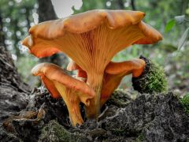
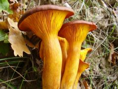
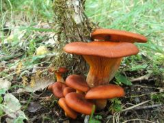

Világitó tölcsérgomba
 Nem ehető
Nem ehető
Kalap: 5-10-(20) cm, domborúból tölcséresedő, sokszor féloldalas, széle kezdetben begöngyölt, felszíne bőrszerű, sima, színe vörösbarna, vöröses narancsbarna vagy rozsdabarna.
Lemezek: sűrűk, erősen lefutók, narancssárgák vagy narancsbarnák.
Tönk: rövid, görbe, féloldalas, lefelé keskenyedő, csoportos, kalapszínű.
Hús: puha, narancssárga, íz és szag nem jellemző.
Előfordulás: júniustól novemberig, lomberdőben, fatuskók tövében vagy azok körül növő, gyakori faj.
Étkezési érték: mérgező.


